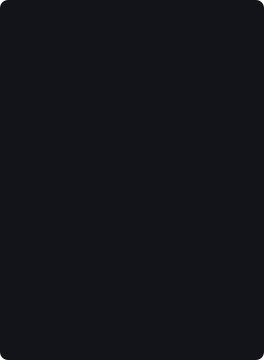

Point vaultcrawl at a folder of markdown (an Obsidian vault, or any .md
directory) and it grows a traditional roguelike out of it. Your notes become
rooms, links become corridors, and your
most-linked obsession becomes the final boss. Densely-connected
clusters grow into districts; the words you actually wrote come
back to you, spoken by the things you meet.
A grown semilattice world (after Christopher Alexander): districts are note communities, buildings are notes, roads are graph seams. You wander it, not descend it.
Each place has a colour character: a grove blazes verdant, a market glows gold, a necropolis is ash grey. Crossing a border visibly shifts the world's hue.
Creatures speak intact sentences from the note they grew out of. Recognition, not templates: it's unmistakably your vault talking back.
Every creature you talk to has an ASCII portrait assembled Spore-style from its traits: a distinct face per note, deterministic.
A deterministic mechanical skeleton (tiers, depths, connectivity, what region a thing lives in) authored by code, wearing a semantic skin (names, lore, faction identities). The skin can never move a number. The same vault always bakes the same world.
Pure Python, zero dependencies, no API key. The default generator is a deterministic offline stub, so this runs on stock Python 3.10+.
# bake a world from the sample vault (or point at your own folder) python -m vaultcrawl.bake sample_vault -o world.json # walk it python -m runtime.play world.json # or watch the headless AI demo python -m runtime.play world.json --auto
Tag any note #private or #nogame and it never enters the
world. Not its words, not its title, not even a trace.